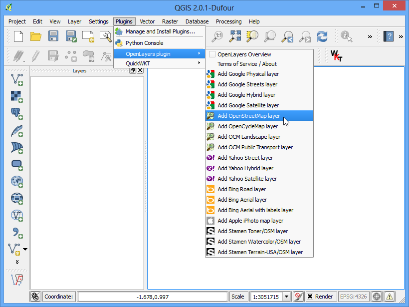
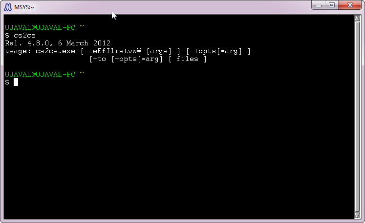

Georeferensi Citra Udara
[ Download PDF A4
Letter ]
Pada tutorial docs/dasar_georeferensi kita meliput proses dasar untuk georeferensi di QGIS. Metode itu melibatkan membaca koordinat dari peta scan dan menginput secara manual. Walaupun sering kali anda mungkin tidak mempunyai koordinat yang tercetak pada peta anda, atau anda mencoba untuk melakukan georeferensi pada gambar. Dalam kasus perti itu, anda bisa menggunakan sumber data georeferensi lain sebagai input. Pada tutorial ini, anda akan belajar bagaimana menggunakan sumber terbuka yang sudah ada dalam proses georeferensi anda.
Tinjauan Tugas
Kita akan melakukan georeferensi pada citra resolusi tinggi menggunakan koordinat referensi dari OSM.
Skill lain yang akan anda pelajari
Mengunduh citra domain publik dengan resolusi super tinggi
Membuka plugin OpenLayer di QGIS
Mengkonversi koordinat antaranproyeksi yang berbeda menggunakan tool commandline xx2
Menggunakan sebuah layer tergeoreferensi untuk input poin ddi tool georeferensi.
Mengatur sebuah nilai kustom tanpa-data untuk sebuah layer.
Mendapatkan data
Pada tutorial ini, kita akan menggunakan citra cantik dari layangan dan balon yang dikumpulkan oleh The Public Laboratory . Mereka membuat gambar versi tergeoreferensi juga tersedia, tapi kita akan mengunduh citra yang belum melewati proses georeferensi dan data unduhan akan melewati proses georeferensi di QGIS. Jika anda menyukai citra yang mereka sediakan , anda dapat explore it pada Google Earth.
Unduh citra JPG Washington Square Park, New York . Anda dapat mengklik kanan tombol JPG dan memilih Save link as....
Prosedur
Untuk tutorial ini, kita akan menggunakan layer OpenStreetMap sebagai referensi layer kita. Install plugin OpenLayer dari . Lihat docs/menggunakan_plugin untuk informasi lebih untuk menggunakan plugins di QGIS.

Ketika sudah diinstall, akses . Ini akan menambah sebuah layer dari ubin pixel yang belum terender dari OpenStreetMap data.

Sekarang anda memiliki layer OpenStreetMap terbuka di QGIS. Perhatikan CRS untuk layer ini. (CRS) ter-set pada EPSG 3857 Pseudo Mercator. Ini penting untuk diperhatikan, karena koordinat yang kita ambil dari layer ini akan berada di CRS ini.

Sekarang tugas anda untuk mencari daerah sekeliling area yang akan kita coba untuk kita lakukan georeferensi. Anda dapat menggunakan Pan dan zoom untuk mencari lokasi area tersebut pada layer OpenStreetMap. Tapi kita dapat mengambil kesempatan ini untuk mendemonstrasikan tool lain mungkin akan membantu anda di masa yang akan datang. Kita tahu bahwa citra yang kita unduh adalah Washington Square Park di New York. Jika anda mencari tempat tersebut, anda akan bisa mencari lokasi halaman wikipedia pada tempat tersebut. Koordinat untuk taman terdaftar di sana,

Anda akan melihat bahwa koordinat dalam DMS atau Degrees/Minute/Second dan Garis Lintang dan Garis Bujur. Tetapi karena layer kita dalam proyeksi Mercator, kita akan membutuhkan koordinat Mercator untuk mencari lokasi taman. Di sini dimana sebuah tool command-line yang bernama cs2cs menjadi berguna. Jika anda menginsstall QGIS dari installer OSGEO4W, anda sudah memiliki tool ini pada sistem anda. Pada Linux dan Mac, tool ini sudah masuk dalam kelengkapan QGIS. Luncurkan sebuah jendela terminak dan ketik cs2cs untuk memeriksa apakah ini tersedia. Pengguna Window dapat menemukan sebuah terminal pada .

Ketika anda sudah memverifikasi bahwa tool cs2cs ada pada sistem anda, saatnya untuk mengkonversi garis lintang dan bujur menjadi koordinat Mercator. Cara tool ini bekerja adalah anda harus menentukan sebuah CRS source dan destination . Definisi CRS bisa PROJ4 string <http://trac.osgeo.org/proj/wiki/GenParms>`_ atau sebuah EPSG code. Karena kita sudah tahu kode EPSG untuk input dan output keluar dari CRS, kita akan menggunakan ini. Cara paling sederhana untuk menggunakan tool ini adalah dengan mengsuplai koordinat input pada command line. Perhatikan bahwa tool menerima koordinat dengan urutan X Y , jadi kita ingin memasukkan `Longitude Latitude . Masukkan command berikut di terminal dan tekan enter. Lihat bahwa kita perlu untuk keluar dari quotes (”) dengan sebuah backslash (\). Ketika anda tekan enter, anda akan melihat tool untuk memroses koordinat output dan mencetak output koordinat X Y pada EPSG 3857 CRS.
echo "-73d59'51\" 40d43'51\"" | cs2cs +init=EPSG:4326 +to +init=EPSG:3857
-8237364.02 4972720.34 0.00

Kopi koordinat ini dan pindah ke QGIS. Pada bagian bawah jendela QGIS, anda akan melihat sebuah kotakteks berlabel koordinat. Masukkan koordinat di sana dengan bentuk X, Y. Tekan Enter, anda akan melihat Peta bergeser sedikit, tapi bukan zoom. Untuk menzoom area, pilih skala 1:2500 dari dropdown skala disebelah kotak koordinat dan tekan enter.

Voila! anda sekarang lihat area Washington Square Poark pada kanvas anda. Sekarang waktunya untuk memulai georeferensi. Luncurkan Georeferencer dari menuselection:Raster –> Georeferencer –> Georeferencer . Jika anda tidak melihat dari menu item, anda akan perlu mengaktifkan plugin Georeferencer GDAL dari .

Pada jendela Georeferencer , akses . Navigasi ke file JPG yang diunduh dan klik Open.

Pada Coordinate Reference System Selector , pilih EPSG:3857 Pseudo Mercator

Sekarang klik pada tombol Add Point pada toolbar dan pilih sebuah lokasi yang dapat teridentifikasi dengan mudah dari gambar. Sudut-sudut, persimpangan, kutub dan lain-lain. Buatlah control points yang baik.

Ketika anda mengklik gambar pada sebuah lokasi poin kontrol, anda akan melihat jendela pop-up bertanya pada anda untuk memasukkan koordinat peta. Klik tombol From map canvas.

Temukan lokasi yang sama pada layer referensi anda, seperti OpenStreetMap dan klik di sana. Kordinat terkumpul dengan klik pada kanvas peta. Klik OK. Dengan cara yang sama, pilih sedikitnya 4 poin pada gambar dan tambahkan koordinatnya dari layer referensi.

Sekarang akses

Pilih pengaturan seperti di bawah. Pastikan tombol Load in QGIS when done diberi tanda cek. Kembali ke jendela Georeferencer , akses . Ini akan memulai proses pembengkokan gambar menggunakan GCP dan membuat raster target.

Ketika proses selesai, anda akan melihat layer tergeoreferensi terbuka di QGIS. Jika semua berjalan baik, anda akan melihatnya tersusun dengan baik pada layer OpenStreetMap.

Untuk membuat output kita terlihat baik, mari hapus nilai tanpa-data yang bewarna hitam dan putih. Klik kanan pada layer gambar dan pilih Properties.

Pindah ke tab Transparency . Kita ingin mengindikasikan pixel hitam dan putih mana saja pada gambar yang mana nilai no-data dan harus dibuat transparan. Masukkan 0 sebagai No data value . Juga,pada guilabel:Custom transparency options , klik tombol + dan tambahkan 255 dengan pixel transparan untuk setiap band dan masukkan 100 pada :Percent transparent . Klik OK.

Sekarang anda akan melihat gambar tergeoreferensi melapisi layer dasar dengan baik.